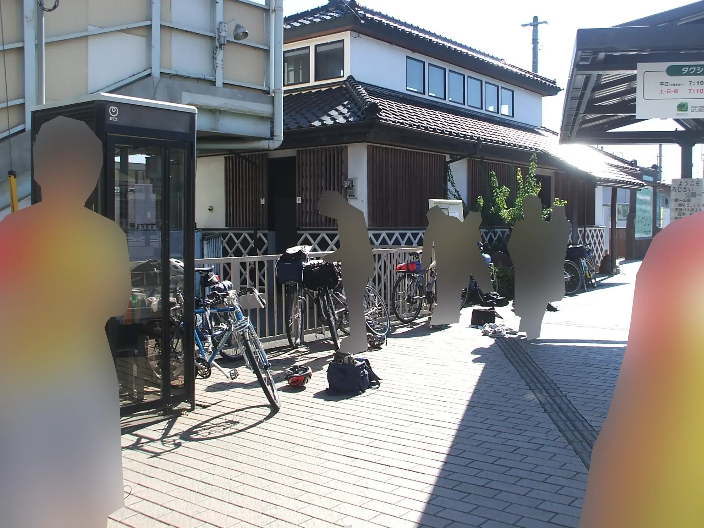
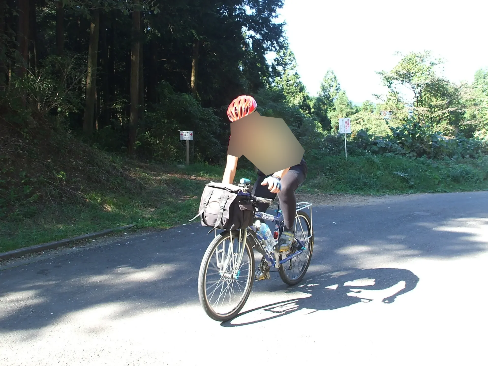
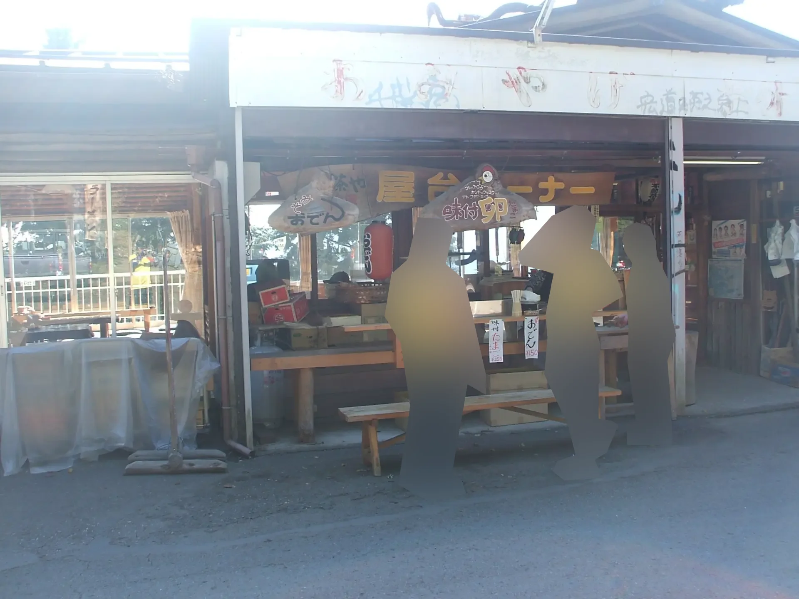
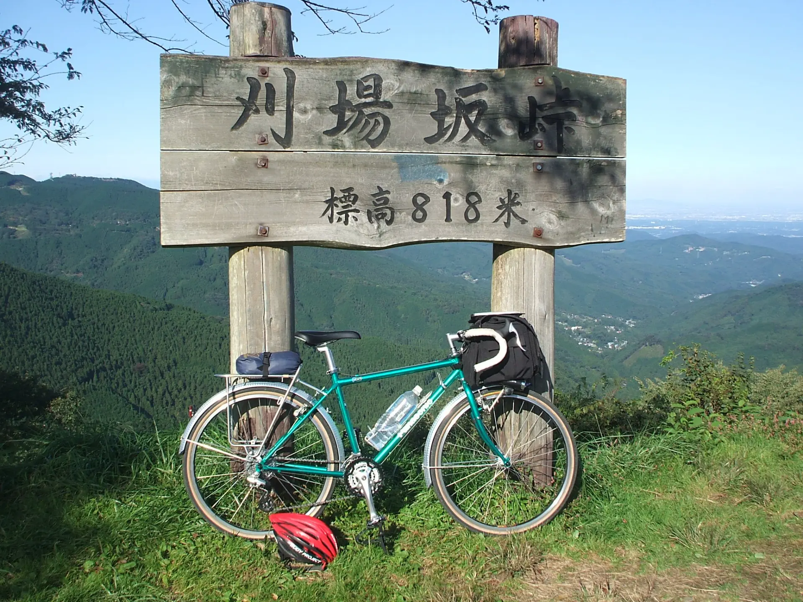
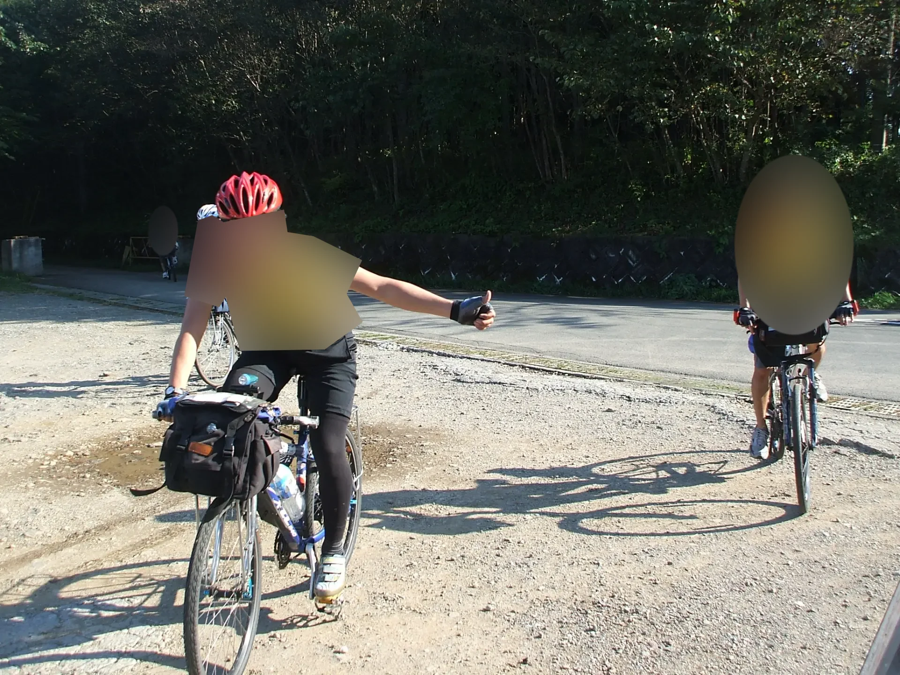
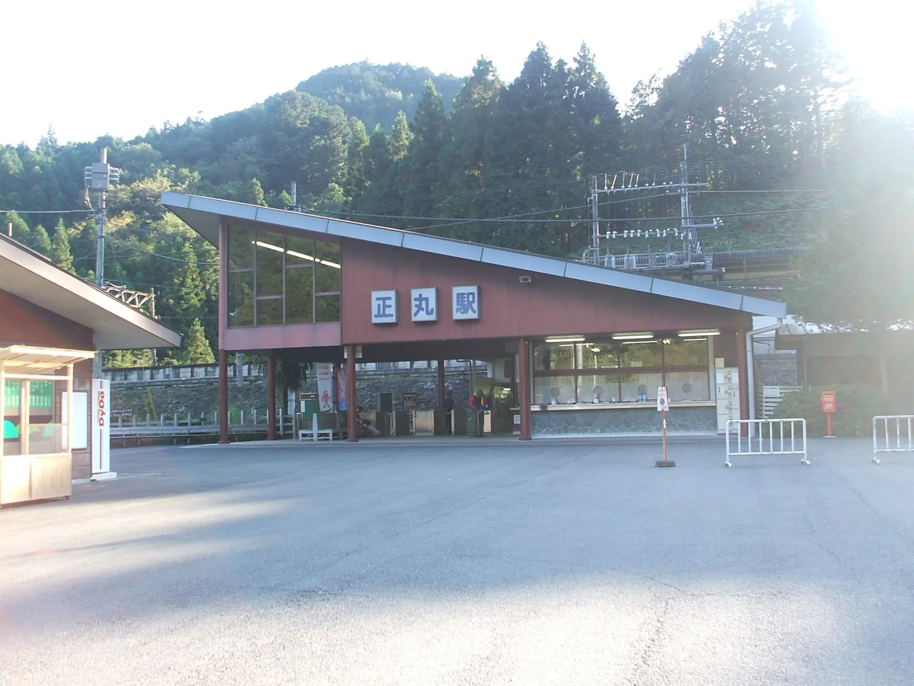
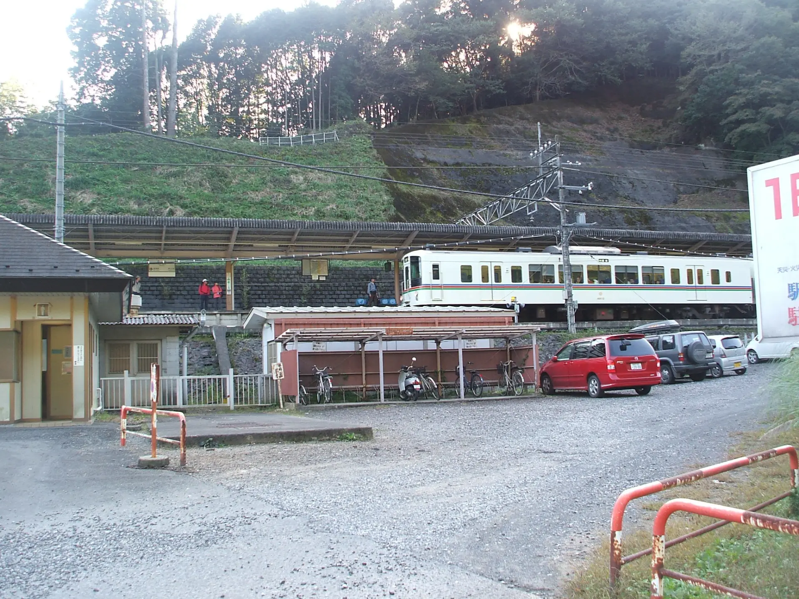

2007年10月21日 越生駅～権現堂～刈場坂峠～正丸駅
大学サイクリングクラブの秋季ラン。
夏合宿のあとに入部した後輩の初クラブランも兼ねていた記憶。
越生駅（おそらく。写真から推測）に集合。
写真を見るに、越生駅から鎌北湖を通って権現堂へ向かったと思われる（あまり記憶がない）。
この写真で走行しているのは自分。
これはどこだろうか？刈場坂峠ではないと思うのだが。
刈場坂峠。自転車は後輩のPanasonicのPOSオーダーツーリング車。当時自分たちはこの自転車のことをPanasonicの「マウンテンランドナー」と呼んでいた。
刈場坂峠に到着した自分（親指を立てている人物）。
刈場坂峠から正丸駅に下って解散した。
 おわり。
2026年1月22日記事公開